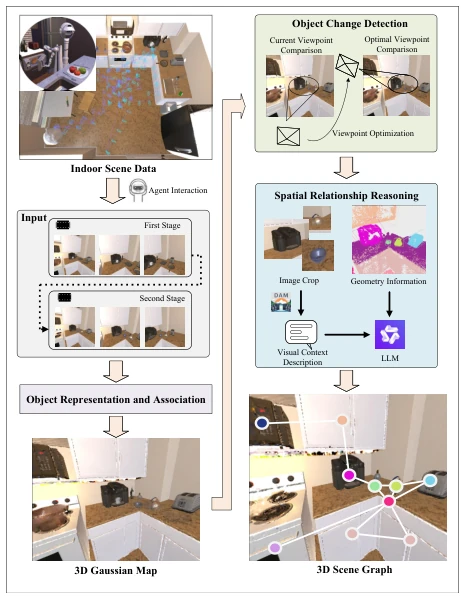
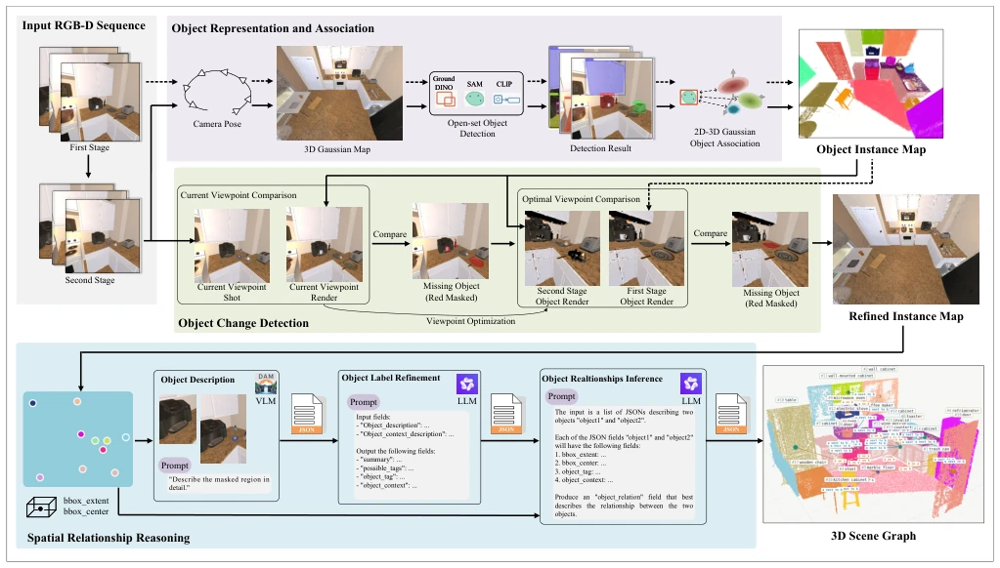
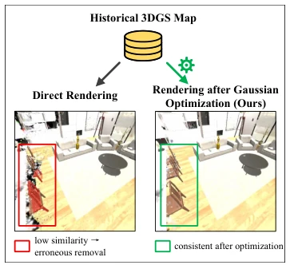
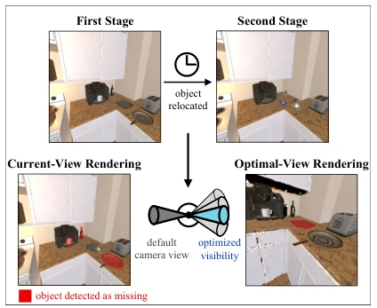
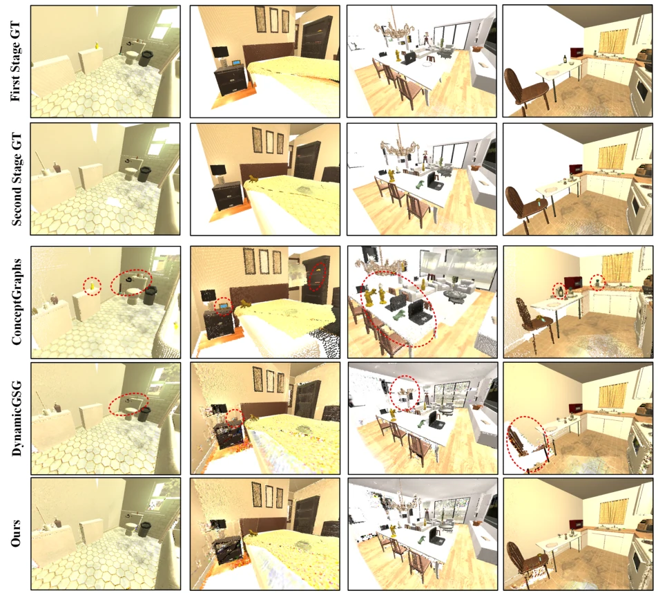
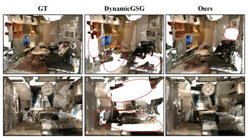
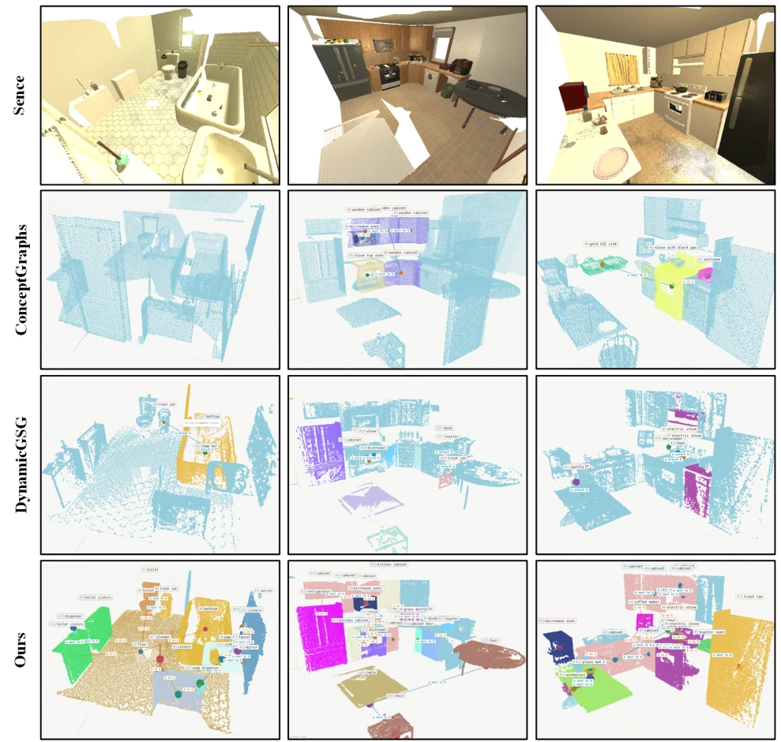
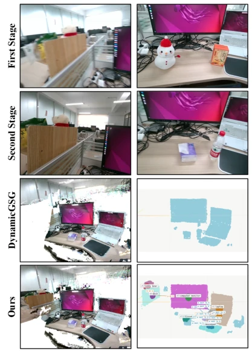

This paper delivers a 'shot in the arm' for dynamic indoor scene graph construction, after all, in the eyes of robots, humans casually moving a chair can instantly turn the previous map into a 'haunted house'. The core selling point of the DSG framework is clear: do not rush to delete, optimize first then compare, do not be deceived by rendering noise. It utilizes double-view rendering and visual context enhancement, indeed making node updates and relationship reasoning in dynamic scenes more stable than predecessors. However, although this 'optimize then render' strategy is clever, the computational overhead is certainly not low, and whether real-time performance can hold up in complex scenes is still a question mark. Additionally, relying on VLM and LLM for reasoning can enhance semantic richness, but on resource-constrained embedded devices, this is simply 'using a cannon to kill a chicken', and the latency problem cannot be ignored. Overall, this is a solid work that takes a big step forward in dynamic scene understanding, but it is still far from true 'real-time robustness', do not think that running simulation data too well means it can conquer the real world.
In the field of embodied AI, 3D scene graphs are the foundation for robot navigation, localization, and manipulation, but the real world is dynamic. Human activities or robot interactions cause frequent changes in object positions, causing scene graphs built on static assumptions to fail rapidly, leading to robots getting 'lost' or operation failures. Existing methods such as DynamicGSG [1] attempt to solve dynamic problems, but their single-view rendering comparison methods are extremely susceptible to insufficient Gaussian primitive optimization and complex materials, producing severe rendering artifacts, leading to erroneous deletion of valid objects or missed detection of missing objects. Furthermore, existing scene graph construction methods [6]-[9] often rely only on object labels and geometric information when reasoning spatial relationships, ignoring rich visual context, leading to inaccurate relationship prediction in complex environments. Worse still, there is a lack of benchmarks for dynamic environments (object re-localization), existing datasets [10] mostly focus on static scenes, making it difficult to quantify the robustness of methods under dynamic changes. Therefore, there is an urgent need for a dynamic scene graph construction framework that can reliably detect object changes and fuse multi-granularity visual context for relationship reasoning.
方法Method
DSG 框架整体分为三个阶段：语义高斯地图构建、基于双视角渲染的物体变化检测、以及视觉上下文增强的空间关系推理。首先，利用 GroundingDINO [11]、SAM [12] 和 CLIP [13] 等开放词汇感知模型，将 RGB-D 序列中的物体关联到 3D 高斯原语上，构建语义感知的高斯地图。其次，针对动态变化检测，提出双视角渲染策略。不同于直接比较原始渲染，该方法先对高斯原语进行优化以减少伪影，再在当前视角和通过优化算法寻找的“最佳视角”（最大化物体可见性）分别渲染并比较。这种双重验证机制有效解决了因视角受限或观察不完整导致的漏检和误删问题。最后，在空间关系推理阶段，利用 DAM 模型生成物体级和上下文级的多粒度文本描述，结合 3D 几何信息（如边界框、重叠率）输入给 LLM。LLM 综合这些信息推断物体间的空间关系，生成更丰富的场景图边。整个流程实现了从动态感知到语义推理的闭环，确保了场景图在物体重定位后的准确性。
The DSG framework is overall divided into three stages: semantic Gaussian map construction, object change detection based on double-view rendering, and visual context-enhanced spatial relationship reasoning. First, utilizing open-vocabulary perception models such as GroundingDINO [11], SAM [12], and CLIP [13], objects in RGB-D sequences are associated with 3D Gaussian primitives to construct a semantic-aware Gaussian map. Second, for dynamic change detection, a double-view rendering strategy is proposed. Unlike directly comparing raw rendering, this method first optimizes Gaussian primitives to reduce artifacts, then renders and compares in the current view and the 'best view' (maximizing object visibility) found through optimization algorithms. This dual verification mechanism effectively solves the problems of missed detection and erroneous deletion caused by limited views or incomplete observation. Finally, in the spatial relationship reasoning stage, the DAM model is used to generate multi-granularity text descriptions at object-level and context-level, combined with 3D geometric information (such as bounding boxes, overlap rates) input to the LLM. The LLM synthesizes this information to infer spatial relationships between objects, generating richer scene graph edges. The entire process achieves a closed loop from dynamic perception to semantic reasoning, ensuring the accuracy of the scene graph after object re-localization.

Fig. 1. Overview of the proposed DSG framework. Given RGB-D sequences captured at different times, a semantic 3D Gaussian map is constructed and object changes are detected via dual-view rendering comparison. The updated object nodes are then combined with VLM descriptions and LLM reasoning to infer spatial relationships, forming the final 3D scene graph.

Fig. 2. Pipeline of the proposed framework. Input RGB-D sequences are processed by open-vocabulary perception models (Grounding-DINO, SAM, and CLIP) and associated with 3D Gaussian primitives to construct a semantic Gaussian map. Object changes are then detected through progressive rendering comparison from the current viewpoint and an optimized viewpoint, yielding an updated object set. For each object, visual descriptions are generated from image observations and refined into structured semantic representations. Finally, the object semantics, visual context, and geometric attributes are jointly fed into a large language model to infer inter-object spatial relationships, producing the final 3D scene graph.

Fig. 3. Comparison between direct rendering and rendering after Gaussian optimization. Due to incomplete observations and rendering artifacts, direct rendering may produce inaccurate object appearances, leading to erroneous removal of valid objects. By optimizing Gaussian primitives before rendering, the proposed method significantly reduces rendering artifacts and improves object consistency.

Fig. 4. The figure illustrates the complementary roles of current-view and optimal-view rendering for object change detection. While current-view rendering may fail to detect missing objects due to unfavorable viewing conditions, optimal-view rendering provides more complete observations, enabling accurate detection of object changes.
Experiments are conducted on the Dyn-THOR simulation benchmark, 3RScan real-world dataset, and a self-built real-world dataset. Baselines include ConceptGraphs [6] and DynamicGSG [1]. Evaluation metrics cover node-level precision, recall, F1 score, and Missing Residual Rate (MRR), as well as edge-level coarse match and fine match counts. Results show that DSG achieves an MRR as low as 2.1% on Dyn-THOR, significantly outperforming DynamicGSG's 3.0% and ConceptGraphs' 14.9%, proving it can more precisely remove missing objects. In edge-level reasoning, DSG generates more valid edges, with a coarse match rate as high as 43%, far exceeding the baselines. Ablation studies show that the double-view strategy significantly reduces MRR, while introducing visual context greatly improves the recognition accuracy of spatial relationships. Qualitative results also confirm that DSG can maintain more complete object representations and richer relationship reasoning under real-world complex scenes, effectively overcoming the problems of rendering artifacts and missing context.

Fig. 5. Qualitative comparison of object on the Dyn-THOR dataset. Red dashed circles highlight incorrect object reconstructions. ConceptGraphs retains obsolete objects after scene changes, DynamicGSG suffers from missed detections and erroneous deletions, while the proposed method produces the most accurate object representations.

Fig. 6. Qualitative comparison of object on the 3RScan dataset. Red dashed circles indicate objects that are incorrectly removed. DynamicGSG exhibits frequent erroneous deletions under challenging real-world conditions, whereas the proposed method preserves more complete object representations.

Fig. 7. Qualitative comparison of spatial relationships on the Dyn-THOR dataset. Object point clouds are shown in blue by default. Objects that are correctly recognized and assigned spatial relationships are highlighted with colors corresponding to their semantic labels. The results demonstrate that the proposed method constructs accurate and semantically rich scene graphs.

Fig. 8. Qualitative comparison of scene graph construction in a real-world indoor environment. Compared with DynamicGSG, the proposed method achieves more accurate object updates and richer relationship reasoning, enabling the construction of a more complete and meaningful 3D scene graph.